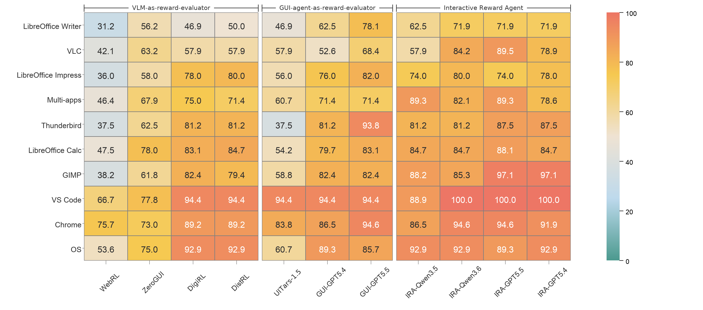

Artifact verification
192 tasks require checking generated documents, spreadsheets, presentations, images, PDFs, or other files.
GUI-RewardBench contains 321 stable GUI task trajectories across 10 Ubuntu desktop categories. It targets the evaluator problem: deciding whether a task was completed from heterogeneous final-state evidence.
| Category | Trajectories |
|---|---|
| Chrome | 37 |
| GIMP | 34 |
| LibreOffice Calc | 59 |
| LibreOffice Impress | 50 |
| LibreOffice Writer | 32 |
| Multi-apps | 28 |
| OS | 28 |
| Thunderbird | 16 |
| VLC | 19 |
| VS Code | 18 |
These figures are copied from the non-commented image references in the LaTeX source.


The benchmark stresses evidence that may be outside the final screenshot.
192 tasks require checking generated documents, spreadsheets, presentations, images, PDFs, or other files.
89 tasks require application preferences, configuration files, default handlers, or system settings.
40 tasks can usually be assessed directly from interface evidence.
